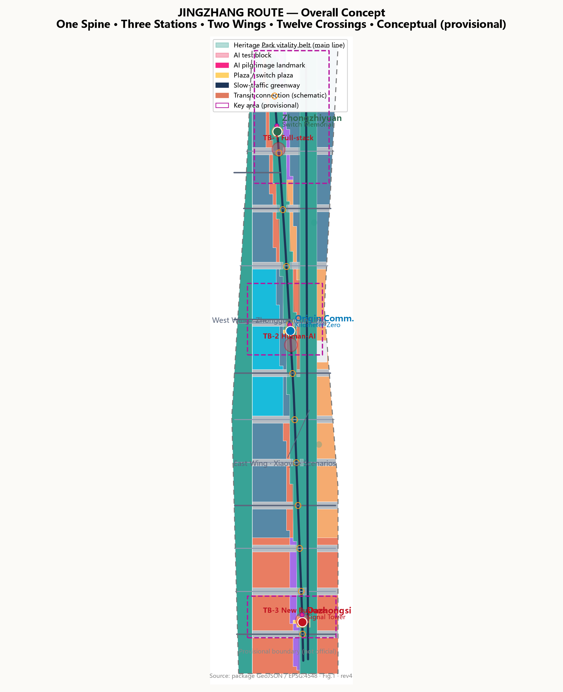
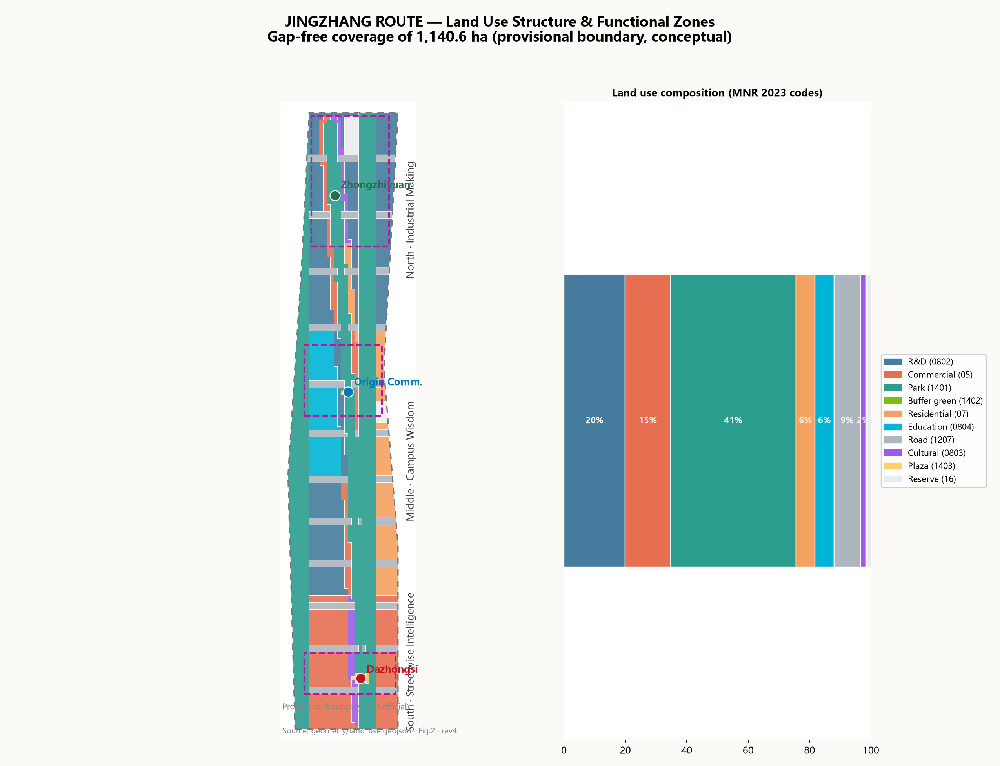
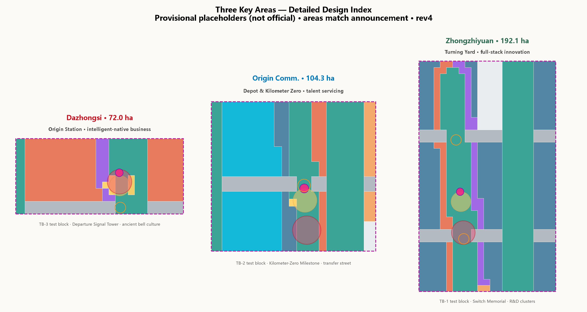
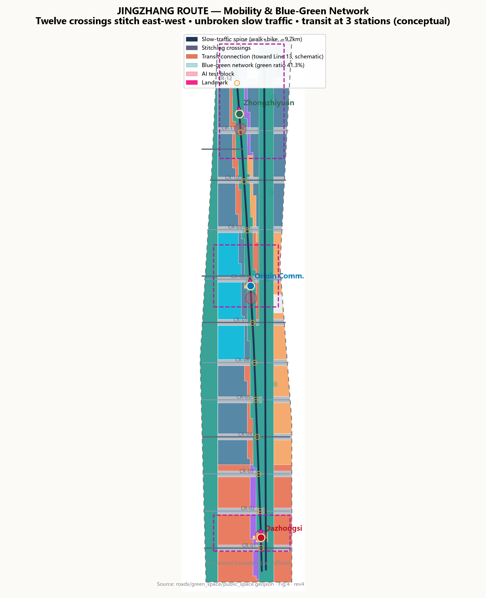
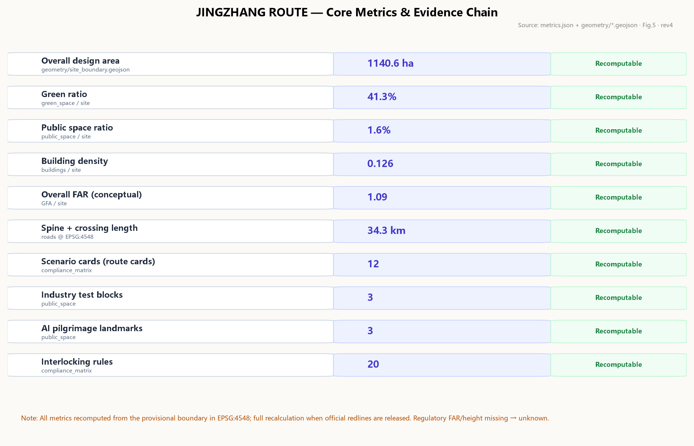

JINGZHANG ROUTE: Urban Design Proposal for the Centennial Jing-Zhang AI Innovation Belt
JINGZHANG ROUTE translates the railway operating system that Zhan Tianyou established when China built its first self-designed trunk railway in 1909 — route application, interlocking verification, signal authorization, block operation, and reverse-movement protection — into the urban operating protocol of the AI Innovation Belt: one green spine, three stations, two wings, twelve crossings, 12 route cards (AI scenario cards) with 20 interlocking rules, 3 industry test blocks, 3 AI pilgrimage landmarks, a four-traction cultural narrative, and a train-diagram style long-term operation system. All spatial proposals are conceptual, generated from the repository's provisional boundary, and will be fully recalculated when official redlines are released.
JINGZHANG ROUTE
Urban Design Proposal for the Centennial Jing-Zhang AI Innovation Belt
117 years ago, Zhan Tianyou opened China's first self-designed railway route on the Jing-Zhang line. 117 years later, this steel track is to become the first urban route of the AI era — every innovation goes live like a train departing: apply for the route, pass interlocking, see the signal, enter the block, arrive safely, or retreat with dignity.
The proposal is organized around the concept of JINGZHANG ROUTE (京张进路). The operating system of railway traffic organization is the most valuable engineering legacy the Jing-Zhang Railway left to China: not a bridge or a gradient, but a whole set of institutions that make thousands of safe movements possible — Route, Interlocking, Signal, Block, and Dispatch. Its core spirit: every movement must be authorized, verified, visible, and reversible. The AI Innovation Belt needs exactly this spirit: every AI service, from proposal to go-live, should move like a train — with a route card, an interlocking table, signal lights, test blocks, and a rollback procedure. This proposal pulls that institutional line from 1909 to 2026, turning the century-old Jing-Zhang from "China's first self-built railway" into "China's first route for self-governed AI urbanism."
---
Design Basis and Source List
This proposal takes the 《Centennial Jing-Zhang AI Innovation Belt International Urban Design Solicitation Prequalification Announcement》 published by the Haidian Branch of the Beijing Municipal Commission of Planning and Natural Resources as its primary basis; its project name, organizers, three scope levels, key-area names and areas, and tasks 1.3/1.4/1.5 define the task boundary 来源 标准. The agent-facing open call taskbook (brief/site-package/agent_taskbook.json) provides the three positioning statements, five functions, three-area-two-wing structure, the six required tasks agent.1–agent.6, the ten co-creation principles, and the unified boundary clause, which govern task response and wording 来源 标准. brief/site-package/ — design brief, allowed design space, land-use enums, planning ranges, standards index, and schemas — forms the machine-readable input 来源. data/source_registry.json formal-ready / background-only / provisional-only tiers define the usage boundary of every material 来源. data/processed/agent_fact_pack.md serves as a reading navigation layer; it is not a new authority 来源.
Provisional boundary disclosure: as of this draft, the official redline has not been obtained; all geometry is generated from the provisional rough polygons in brief/site-package/geometry/provisional_boundaries.geojson 来源 来源 来源. geometry/site_boundary.geojson#SITE-001 空间数据 and the three key areas carry official_boundary=false, geometry_role=provisional_constraint, boundary_precision=provisional_rough; they are for generation, self-check, visualization, and design discussion only, and must not be treated as official redlines, approval basis, precise-area basis, or statutory controls 指标. When official polygons are released, the site boundary, key areas, land use, roads, green space, public space, buildings, phasing, and all area metrics must be recalculated as a whole. The proposal is organized to be discussable, verifiable, and replaceable; this data gap does not affect intake or structural review, while content scoring, acceptance, and merge decisions remain with the maintainers and professional review.
Land-use classification follows the project subset of the MNR 《Land Use and Sea Use Classification Guide (2023)》 标准; urban design and public space controls cite the MOHURD 《Measures for the Administration of Urban Design》 标准; implementation boundaries cite the 《Measures for Compilation, Examination and Approval of Regulatory Detailed Plans》 标准. AI scenario content safety and labeling follow the 《Interim Measures for the Administration of Generative AI Services》 标准, public space accessibility follows the 《Law of the PRC on Barrier-Free Environment Construction》 标准, and elderly-friendly requirements reference Guo Ban Fa [2020] No. 45 (background reference) 标准.

来源
Fig. 1: Overall concept and evidence chain. The provisional boundary is drawn as a low-contrast dashed line; design elements (spine, stations, wings, crossings, test blocks) are high contrast.
Three-Level Scope Framework
The three scopes defined by the announcement form the working framework 来源:
- Coordinated research area (43.6 km²): north to the 5th Ring Road North, east to the Jingzang Expressway, south to Xizhimenwai Street, west to Wanquanhe Road. Objective: AI industry ecology, future-city form, and strategic positioning; depth: industry and spatial strategy; outputs: industry structure, three-area-two-wing synergy loop, naming/Logo system 指标.
- Overall design area (11.4 km²): the 1–2 km urban and industrial belt around the Jing-Zhang Heritage Park. Objective: overall urban renewal framework, land use and function layout, transport/municipal support, urban character; depth: regulatory-plan-level urban design 指标 深度.
- Key detailed design area (368.4 ha): from north to south, Zhongzhiyuan AI Autonomous Innovation Acceleration Area (192.1 ha), Beijing AI Origin Community (104.3 ha), and Dazhongsi AI Industry Cluster (72.0 ha); depth: consolidated implementation-plan-level urban design 指标 指标 深度.
The three levels transmit downward: industry strategy at the research level decides functional zoning at the overall level, and the overall spatial structure decides the detailed design of key areas. Key-area geometry comes from PROV-KEY-001/002/003 in geometry/key_areas.geojson 空间数据; these are temporary rectangular placeholders expressing location and magnitude only, not road redlines, parcel boundaries, or ownership 来源 深度.

来源
Fig. 2: Three-level scope transmission and the "one spine, three stations, two wings, twelve crossings" structure.
Coordinated Research Area: Industry and Future City Research
Positioning and functions
The three taskbook positioning statements — Centennial Jing-Zhang Cultural Belt, Urban AI Life Experience Belt, AI-Integrated Innovation Belt — are realized respectively by the cultural narrative (§10), the public experience line (§9), and the industry innovation line (§3/§7). The five functions — AI full-stack autonomous innovation, world-class AI innovation ecology, AI+ scenario empowerment paradigm, intelligent AI vibrant city, and global voice in AI governance — are assigned to the three-area-two-wing spatial carriers 来源 标准:
- Zhongzhiyuan AI Autonomous Innovation Acceleration Area (north) = Turning Yard: full-stack autonomous innovation and global AI governance voice. Trains turn back and re-marshal here — research turns back into products, products re-marshal into industry.
- Beijing AI Origin Community (middle) = Locomotive Depot and Kilometer Zero: talent servicing and maintenance for a world-class ecology. Railway mileage starts from station zero; AI innovation starts from people.
- Dazhongsi AI Industry Cluster (south) = Origin Station: intelligent-native new business. Routes depart from here.
- Zhongguancun Technology Service Wing (west) = Link Line: connecting to the Zhongguancun main network — capital, IP, global factor allocation.
- Xiaoyue River Scenario Empowerment Wing (east) = Scenario Branch: delivering AI scenarios into daily life along the Xiaoyue River.
Naming and Logo direction
Chinese name: 京张进路; English: JINGZHANG ROUTE. Logo direction: "signal light language + rail line" — the green/yellow/red three-aspect signal of the Jing-Zhang semaphore as the motif, with three rail lines converging from north to south into the character "人" (person) — echoing Zhan Tianyou's switchback design at Qinglongqiao and expressing the "human-centered" value of an AI city. The Logo and identity system are conceptual and to be developed and trademark-cleared by professional designers 来源.
Six global AI innovation ecology cases and transfer mechanisms
| Case | Transferable mechanism |
|---|---|
| King's Cross, London: disused railway yards regenerated into a tech-culture district | Railway-heritage regeneration paradigm: preserve track memory, public space first, phased renewal — directly maps to the Heritage Park spine and three-station renewal |
| Station F, Paris: old freight station converted into the world's largest startup campus | Station-hall-as-incubator prototype: applicable to Dazhongsi Origin Station |
| Kendall Square, Boston: innovation clustering around research institutions | Near-campus technology transfer: the Origin Community sits next to Tsinghua, Beihang, BUPT |
| Punggol Digital District, Singapore: smart district with integrated industry testing | Statutory test-and-validate space: corresponds to our three industry test blocks |
| Nanshan, Shenzhen: urban-village renewal coexisting with tech industry | Low-cost space + high-density innovation: elastic industrial space in the Turning Yard |
| Yunqi Town, Hangzhou: conference-community-industry compound operation | Annual events driving long-term operation: corresponds to the train-diagram operation system |
All transferred mechanisms are "routed": each case is evaluated and written into the interlocking conditions and operator clauses of the corresponding route card, so that borrowed experience stays verifiable and exit-able 来源.
Overall Design Area: Urban Renewal and Regulatory-Plan-Level Urban Design
Spatial structure: one spine, three stations, two wings, twelve crossings
- One spine: the Jing-Zhang Heritage Park vitality belt (main line), approx. 9.7 km long, 120–210 m wide — the blue-green spine, slow-traffic spine, and cultural spine 空间数据.
- Three stations: Dazhongsi Origin Station, Origin Kilometer-Zero Station, Zhongzhiyuan Turning Yard — the innovation engines and public living rooms 空间数据.
- Two wings: Zhongguancun Technology Service Wing (west link) and Xiaoyue River Scenario Wing (east branch) 空间数据.
- Twelve crossings: twelve lateral stitching crossings reconnecting the east-west city split by a century of railway; each crossing is both a traffic stitch and a "switch" — the human-machine co-throw node of AI decisions 空间数据 空间数据.
Urban operating protocol: the five-step route regime
The core institutional design translates railway traffic organization into an urban operating protocol in five closed steps:
1. Route application: every AI service files a "route card" (scenario card) before go-live, stating spatial span, time window, responsible party, data boundary, and rollback plan. 2. Interlocking verification: the card enters the interlocking table — applications conflicting with existing routes (same public space at the same time, dual-write to the same dataset, overlapping test grounds) are not authorized. 3. Signal authorization: upon verification, the spatial signal light turns from red to green; the public can see "this route is open." 4. Block operation: the service runs inside its designated test block or formal block, with occupancy and release logged. 5. Arrival / rollback: normal arrival at expiry; on anomaly, the pre-filed rollback procedure is executed, the signal turns red, and the block is released.
The protocol is realized by 12 route cards (§7) and 20 interlocking rules 指标, with spatial seats at 3 test blocks, 12 switch nodes, and the three station plazas 空间数据. All protocol elements are conceptual and to be deepened by professional teams and authorities 来源.
Urban renewal framework and character control
Renewal is organized as retain-renovate-new at an approximate 30/40/30 ratio (conceptual; subject to field survey) 指标 深度: the first interface along the spine is renovation-led (keep the block grain, replace functions); the second interface is new-build-led (incremental innovation space); heritage and historic elements are strictly retained 空间数据. Character in three bands: the south (Dazhongsi–Zhichunlu) is "streetwise intelligence" — active commercial frontages with advertising and lighting governed by the signal light language; the middle (Origin Community) is "campus wisdom" — low, transparent buildings near campuses; the north (Zhongzhiyuan) is "industrial making" — R&D clusters with unified rooftop and fifth-facade control. Height control concept is "setback from the green spine": within 150 m of the spine, buildings do not exceed 30 m to keep views open 空间数据; 30–60 m farther out; 60–80 m landmarks at the three stations 指标 (regulatory height conditions are missing; these are conceptual values pending official conditions) 深度 深度.
Detailed Design of Key Areas
Key-area geometry is in geometry/key_areas.geojson (temporary rectangular placeholders; areas match the announcement: 192.1/104.3/72.0 ha) 空间数据 空间数据 空间数据. All detailed designs below are directional concepts pending official polygons and survey data.

来源
Fig. 3: Station positioning differences, spatial links, and project anchors.
Zhongzhiyuan AI Autonomous Innovation Acceleration Area (Turning Yard, 192.1 ha)
- Positioning: main carrier of the AI full-stack autonomous innovation system; the turning-yard image: research turns into products, products re-marshal into industry 来源.
- Structure: central test spine (TB-1 full-stack innovation test block 空间数据) + eastern R&D clusters (0802 research land 空间数据) + western industry service belt (05 commercial).
- Buildings: conceptual 40–60 m R&D clusters; retain existing park grain, renovate the spine interface, new-build around the Turning Plaza 指标.
- Mobility: Qinghe Crossing (CR-12) and Shangdi South Crossing (CR-11) stitch; transit connection toward Line 13 空间数据.
- Public space: Turning Plaza (PUB-003) + Turning Switch Memorial (LM-3 landmark).
- AI scenarios: SC-01 full-stack compute dispatch, SC-02 robot delivery test block, SC-03 developer real-machine validation yard (route cards in §7).
- Risks: complex ownership in existing industrial parks; demolition/renovation subject to field survey; test-block opening requires special permits.
Beijing AI Origin Community (Locomotive Depot and Kilometer Zero, 104.3 ha)
- Positioning: talent servicing and maintenance for a world-class AI ecology; the depot image: AI's talent "locomotives" are serviced, marshaled, and re-departed here; kilometer zero: the railway mileage origin and the spiritual origin of AI innovation.
- Structure: Kilometer-Zero Milestone Plaza (PUB-002) + education/research belt (0804 education / 0802 research 空间数据) + near-campus technology transfer street.
- Buildings: conceptual 12–36 m education/research buildings; retain campus-adjacent street grain, renovate the spine commercial interface 指标.
- Mobility: Wudaokou Crossing (CR-08) and Qinghuayuan Crossing (CR-07) stitch; TB-2 human-machine collaboration test block sits at the transit connection 空间数据.
- Public space: Origin Plaza + Kilometer-Zero Milestone (LM-2) + multilingual interpretation pavilion.
- AI scenarios: SC-04 campus technology transfer street, SC-05 real-time multilingual interpretation, SC-06 human-machine care test block.
- Risks: university and research land is not unilaterally decided by the district; renewal is campus-community co-governed functional replacement, not large-scale demolition.
Dazhongsi AI Industry Cluster (Origin Station, 72.0 ha)
- Positioning: intelligent-native new business cluster; the origin-station image: AI industry departs from here; the Dazhongsi ancient bell culture provides a "time bell" anchor.
- Structure: Origin Plaza (PUB-001) + intelligent new-business blocks (05 commercial + 0803 cultural 空间数据) + ancient bell cultural node (heritage marker approximate; official line pending 空间数据).
- Buildings: conceptual 18–54 m commercial/cultural buildings; renovation-led with selective new build.
- Mobility: Dazhongsi East Crossing (CR-01) and Xizhimen North Crossing (CR-02) stitch; TB-3 intelligent new-business test block 空间数据.
- Public space: Origin Plaza + Departure Signal Tower (LM-1 landmark: bell + signal light composite).
- AI scenarios: SC-07 new-business window laboratory, SC-08 unmanned retail and last-mile delivery, SC-09 intelligent consumption experience.
- Risks: adjacent to the Xizhimen transport hub with complex underground conditions; construction near heritage requires special approvals.
Land Use, Building Scale, and Retain-Renovate-Demolish Strategy
Land use composition (recomputed from geometry/land_use.geojson in EPSG:4548 深度)
| Code | Category | Area (ha) | Share |
|---|---|---|---|
| 0802 | Research | 227.8 | 20.0% |
| 05 | Commercial services | 169.2 | 14.8% |
| 1401/1402 | Green and open space | 465.6 | 40.8% |
| 07 | Residential | 70.7 | 6.2% |
| 0804 | Education | 70.7 | 6.2% |
| 1207 | Road land | 97.7 | 8.6% |
| 0803 | Cultural | 23.0 | 2.0% |
| 1403 | Plaza | 8.9 | 0.8% |
| 16 | Reserve | 7.0 | 0.6% |
| Total | 1140.6 | 100% |
The partition fully covers the submitted boundary without gaps or overlaps; adjacent polygons share boundary coordinates 指标 指标 and 指标 指标. The high green share (40.8%) expresses "a city founded on a green spine": the Heritage Park vitality belt, the Xiaoyue River greenbelt, and station parks form the blue-green skeleton 指标.
Building scale (conceptual massing, not survey 深度)
- Building footprint: approx. 1.435 million m² (building density 0.126) 指标 指标
- Total floor area: approx. 12.44 million m² (3.6 m/floor) 指标
- Overall FAR: approx. 1.09 (sqm/sqm, conceptual) 指标
- Height control: ≤30 m within 150 m of the spine, 30–60 m beyond, 60–80 m landmarks at stations (conceptual; regulatory conditions missing and marked unknown) 指标
Retain-renovate-demolish strategy (conceptual ratio, pending survey)
Allocated by block-renewal logic: approx. 30% retain (heritage surroundings, campus grain, existing parks), approx. 40% renovate (spine first interface functional replacement), approx. 30% new build (second interface incremental space and station nodes). Every mass in geometry/buildings.geojson carries a retention property (retain/renovate/new) for audit 空间数据 深度. These are conceptual only and do not constitute parcel-level demolition/renovation conclusions 来源.
AI Innovation Ecosystem, Personas, and AI+ Scenarios
Twelve route cards (AI scenario cards)
Each route card = one scenario: span, interlocking conditions, data boundary, human review, operator, spatial layer, risk. All are conceptual 指标 来源.
| ID | Route card (scenario) | Location | Users | Type |
|---|---|---|---|---|
| SC-01 | Full-stack compute dispatch | Turning Plaza | developers/enterprises | industry service |
| SC-02 | Robot delivery test block | Zhongzhiyuan TB-1 | logistics/ residents | industry test & validation |
| SC-03 | Developer real-machine validation yard | Zhongzhiyuan east | developers | industry service |
| SC-04 | Campus technology transfer street | Origin west spine | faculty/startups | industry service |
| SC-05 | Real-time multilingual interpretation | Origin Plaza | international talents | public service |
| SC-06 | Human-machine care test block | Origin TB-2 | seniors/care | industry test & validation |
| SC-07 | New-business window laboratory | Dazhongsi spine | merchants | industry service |
| SC-08 | Unmanned retail & last-mile delivery | Dazhongsi TB-3 | residents | industry test & validation |
| SC-09 | Intelligent consumption experience | Dazhongsi blocks | consumers | consumer experience |
| SC-10 | Crossing smart signal lights | twelve crossings | all | public service |
| SC-11 | AI pilgrimage check-in & honor wall | three landmarks | developers/visitors | public culture |
| SC-12 | Urban interlocking dashboard | three plazas | all | public governance |
Example route card (SC-02 robot delivery test block): span = TB-1 inner loop; time window = weekdays 10:00–16:00; interlocking conditions = no conflict with SC-12 dashboard data, off-peak with pedestrian rush hours, 8 km/h speed cap in the block; data boundary = no facial capture, no off-route recording; human review = weekly operation report jointly reviewed by operator and sub-district; rollback = immediate stop and switch to human delivery 空间数据. The three industry test-and-validation cards (SC-02/SC-06/SC-09) map to the three test blocks 指标 指标.
Five personas and scenario-space-operation mapping 指标
1. Developers/entrepreneurs (Zhongzhiyuan): real-machine validation, compute, funding → SC-01/03, operated by the "dispatch office" developer community. 2. Faculty and students (Origin): technology transfer, internships, cross-language exchange → SC-04/05, operated by a campus-community joint committee. 3. Residents (incl. seniors): care, convenience, no digital exclusion → SC-06/08/10, operated by sub-district + enterprise consortium with human counters retained. 4. Visitors and AI pilgrims: culture, check-in, public narrative → SC-11, operated by the pilgrimage route manager. 5. Enterprise operators: testing compliance, data compliance, interlocking admission → SC-02/07/12, operated by the interlocking-table committee.
Interlocking rules (20, excerpt)
Interlocking rules write "what must not happen at the same time" into verifiable entries: ①only one route open in the same public space at the same time; ②no dual-write to the same dataset; ③test blocks off-peak with pedestrian rush hours; ④unmanned delivery and event hours are mutually exclusive; ⑤landmark lighting and nighttime rest hours are mutually exclusive; ⑥every route's rollback procedure must be filed before opening 指标. The full rule table is in compliance_matrix.json and the visual page. The rules are conceptual and to be converted into management instruments by professional teams and authorities.
Transport, Rail, Municipal Infrastructure, and Public Services
Slow traffic and stitching
- Slow-traffic main spine: continuous pedestrian + cycling greenway along the Heritage Park vitality belt, approx. 9.7 km, unbroken through the three stations 空间数据 指标.
- Twelve crossings: secondary/branch roads stitching east-west; zero-level crossings with synchronized signal light language (SC-10), reconnecting daily life on both sides 空间数据.
- Transit connections: each station connects toward the existing Line 13 (schematic alignment, not engineering) 来源 空间数据.
- Wing corridors: Zhongguancun Link Line (west) and Xiaoyue River greenway (east) 空间数据.
Municipal and new infrastructure (conceptual)
- Edge-compute nodes co-located on smart light poles (carriers of the signal light language) at crossings 深度.
- Distributed energy and rooftop PV reserved; dual-circuit power for test blocks.
- Utility ducts pre-laid under the twelve crossings to avoid repeated excavation.
- Public data: the interlocking dashboard (SC-12) publishes route status and block occupancy anonymously; personal privacy never leaves the premises 来源.

来源
Fig. 4: Slow-traffic spine, twelve crossings, wing corridors, blue-green network, and AI scenario nodes.
Blue-Green Network, Public Space, and Urban Character
Blue-green system
- Jing-Zhang Heritage Park vitality belt (main-line green spine in three bands: streetwise south / campus middle / industrial north) 空间数据.
- Xiaoyue River greenbelt (east wing, waterfront slow traffic) 空间数据 and west buffer greenbelt 空间数据.
- Three station parks plus three pocket parks. Total green space approx. 4.708 million m²; green ratio 41.3% 指标 指标 深度.
Public space and three AI pilgrimage landmarks 指标
1. Departure Signal Tower (Dazhongsi, LM-1): modeled on the railway departure signal; the tower's three-aspect lights publish the belt's route status in real time; linked with the ancient bell culture for hourly "bell reports" — the public clock of AI city operations 空间数据. 2. Kilometer-Zero Milestone (Origin, LM-2): a railway mileage-origin installation recording century milestones and the first contributor list of the belt (honor display; names published with authorization) 空间数据. 3. Turning Switch Memorial (Zhongzhiyuan, LM-3): a manually throwable switch installation expressing "humans keep the final throw" — AI proposes, humans throw; a global check-in and public participation node 空间数据.
The three landmarks form the "route pilgrimage line" public experience route (depart south, pass origin, arrive at the turn), linked with the Heritage Park and Zhongguancun innovation narrative 深度. All landmarks are conceptual installations requiring design rights clearance before implementation 来源.
Character control
The signal light language is applied as a common public design language for paving, lighting, signage, and advertising norms; the fifth facade is uniformly managed; accessibility and age-friendliness are embedded throughout (zero-level crossings, audible signal cues, large-type and voice modes) 标准 标准.
Renewal Projects, Implementation Policy, and Phasing
Eight renewal projects (conceptual list 指标)
| ID | Project | Location | Type | Dependencies |
|---|---|---|---|---|
| R-01 | Heritage belt south section connection | Dazhongsi–Zhichunlu | public space | site handover |
| R-02 | Origin Plaza & signal tower | Dazhongsi station | node new build | heritage approval |
| R-03 | Intelligent new-business blocks renovation | Dazhongsi spine | building renovation | tenant negotiation |
| R-04 | Origin Plaza & Kilometer-Zero milestone | Origin station | node new build | campus co-governance |
| R-05 | Near-campus transfer street | Origin west | function replacement | university cooperation |
| R-06 | Turning Plaza & switch memorial | Zhongzhiyuan station | node new build | park ownership |
| R-07 | Full-stack test block TB-1 | Zhongzhiyuan | industry testing | special permits |
| R-08 | Xiaoyue River greenway connection | east wing | blue-green network | river management coordination |
Phasing (geometry/phasing.geojson 空间数据)
- Phase 1, 2026–2028 "test blocks first": approx. 2.4 km². Heritage belt connection, three test blocks open, station plazas launched — the route regime runs first 指标.
- Phase 2, 2029–2031 "three stations take shape": approx. 3.0 km². Renewal projects around stations land; wing corridors take shape 指标.
- Phase 3, 2032–2035 "full-belt interlocking": approx. 6.0 km². Full-belt renewal completes; the interlocking table runs belt-wide 指标.
Global AI event system and long-term operation (conceptual 来源 深度)
Annual operations organized as a train diagram: ①Jingzhang Developer Day (quarterly, rotating stations); ②International AI Innovation Week (annual, Turning Plaza as home venue — the global AI event system); ③Interlocking Annual Report (annual public route statistics and governance ledger); ④Route Pilgrimage Line (everyday public experience); ⑤Dispatch Office developer community (online + three station spaces); ⑥attraction and conversion mechanism (test-block graduates get priority for industrial space). Operators, funding, and policy arrangements are conceptual and to be assessed by authorities and operators [assumption:A-OPERATION-001].
Metrics, Area Recalculation, and Compliance Matrix
Core metrics and design meaning
| Metric | Value | Design meaning | Recalculation source |
|---|---|---|---|
| Overall design area | 1140.6 ha | overall level of scope transmission | site_boundary @ EPSG:4548 指标 |
| Key-area areas | 192.1/104.3/72.0 ha | matching the announcement | key_areas @ EPSG:4548 指标 |
| Green ratio | 41.3% | green-spine city, talent life quality | green_space/site 指标 |
| Public space ratio | 1.6% | point-like public spaces: stations, switches, test blocks | public_space/site 指标 |
| Building density | 0.126 | low-density renewal, no mass demolition | buildings/site 指标 |
| Overall FAR | 1.09 | conceptual, pending regulatory conditions | GFA/site 指标 |
| Slow spine + crossing length | 34.3 km | stitching and slow-traffic continuity | roads @ EPSG:4548 指标 |
| Scenario cards / test blocks / landmarks | 12/3/3 | taskbook-mandated counts | compliance_matrix 指标 指标 指标 |
| Interlocking rules | 20 | verifiable rules of the route regime | compliance_matrix 指标 |
All metrics are recomputed from geometry/*.geojson in EPSG:4548 or defined by design constants; formulas and assumptions are in metrics.json 深度. Regulatory FAR and height are marked unknown in metrics.json with recalculation preconditions because official conditions are missing 指标 指标.
Compliance coverage
compliance_matrix.json covers announcement tasks 1.3.1–1.5.3.3 (16 items) and agent.1–agent.6 (6 items), each with chapter, layer, metric, drawing, HTML, source, and assumption evidence 深度; standard_matrix.json covers 9 registered standards (all 5 mandatory addressed) 标准; design_depth_matrix.json covers 15 formal design-depth items, all complete 深度.

来源
Fig. 5: Core metric sources, recalculation relationships, pending regulatory metrics, and self-check status.
Risk, Copyright, and Compliance
- Data legitimacy: all cited materials come from public official announcements, repository-cleared materials, or agent-generated content; no non-public maps, unauthorized tables, or fabricated official endorsements are used 来源.
- Copyright: geometry, figures, HTML, and PDFs are self-generated by the agent with no external copyrighted material 来源 来源 来源; OSM background is context-only under ODbL attribution boundaries 来源; figures use system fonts (Microsoft YaHei/DejaVu Sans) not redistributed with the package; see
report/copyright_statement.md. - Privacy: data-boundary clauses in all AI scenarios prohibit facial capture and off-route recording; public data is published anonymized 来源.
- AI generation disclosure: this proposal is generated by an AI agent; methods and toolchain are disclosed in §12 and
report/narrative.md; no fabricated manual operations 来源. - Official-approval prohibition: all spatial proposals are conceptual; they do not constitute government approval, planning approval, implementation commitments, investment estimates, or parcel-level conclusions 来源.
- Pending materials: official redline and key-area polygons, regulatory conditions (FAR/height/density), existing buildings and ownership, road redlines, municipal utilities, heritage control lines, engineering alignments (e.g., Line 13), and current transport data [assumption:A-CONTROLS-001] [assumption:A-BOUNDARY-001].
- Professional review needed: the route regime, interlocking rules, and test-block institutions require legal and governance review; demolition/renovation and height control require planner review 深度.
References
本清单对应的机器可读登记见 sources.json 来源。
1. Haidian Branch, Beijing Municipal Commission of Planning and Natural Resources: 《Prequalification Announcement for the Centennial Jing-Zhang AI Innovation Belt International Urban Design Solicitation》(2026-05-09), https://ghzrzyw.beijing.gov.cn/zhengwuxinxi/tzgg/hd/202605/t20260509_4643047.html 2. 《Agent-Facing Open Call Taskbook Excerpt for the Centennial Jing-Zhang AI Innovation Belt》, open-city-ai/haidian brief/site-package/agent_taskbook.json (cleared excerpt 2026-05-18) 3. MOHURD: 《Measures for the Administration of Urban Design》(Ministry Order No. 35, 2017) 4. MOHURD: 《Measures for Compilation, Examination and Approval of Regulatory Detailed Plans》(Ministry Order No. 7, 2010) 5. MNR: 《Land Use and Sea Use Classification Guide (2023)》 6. CAC et al.: 《Interim Measures for the Administration of Generative AI Services》(2023) 7. NPC Standing Committee: 《Law of the PRC on Barrier-Free Environment Construction》(2023) 8. General Office of the State Council: 《Implementation Plan for Solving Difficulties of the Elderly in Using Smart Technologies》(Guo Ban Fa [2020] No. 45) 9. Repository materials: data/source_registry.json, data/processed/agent_fact_pack.md, brief/site-package/geometry/provisional_boundaries.geojson (verified 2026-08-07) 10. Public historical records of the Jing-Zhang Railway (1905–1909) and the Qinglongqiao switchback designed by Zhan Tianyou